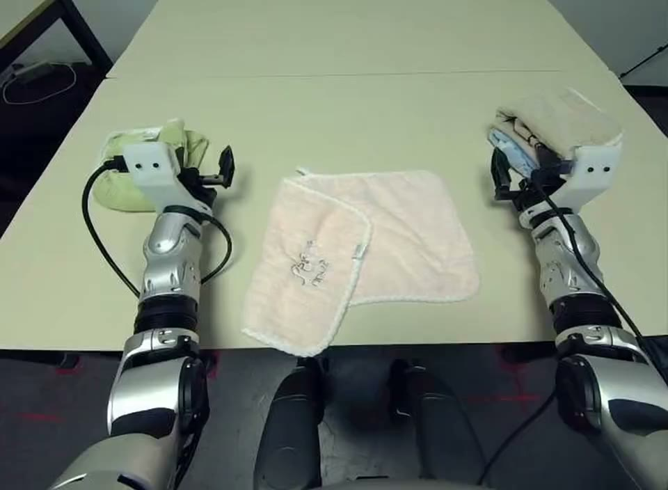

PhysicsLENS · Momentum
Fold the towel and set it aside
Wan2.2 TI2V-5B · Unitree G1 · Dex1 grippers · #031

Human annotation
One annotator's final record from the publisher's consolidated_annotations.csv (one annotation per clip; no inter-annotator agreement exists). Scales and label definitions are quoted from the PhysicsLENS paper, Appendix B, Tables 8–9. JSON
Scores
Physical plausibility (P)3 / 4
- 1 — clearly breaks physics, including clipping, floating, objects appearing or disappearing, or impossible motion.
- 2 — mostly implausible, with one clear issue or several smaller issues.
- 3 — mostly plausible, with minor oddities only.
- 4 — physically realistic.
P01 = 0.6667 · plausible (P≥3) = 1
Action completion (A)yes
Judge whether the requested task is completed by the end of the clip, even if the process is physically unrealistic.
A = 1
Hidden-property adherence (H)—
Not collected: observable prompt. The paper does not treat the missing value as 0.
Violation labels · multi-select, 8 labels
| Label | Selected | Definition (paper, Table 9) |
|---|---|---|
| Causality | 0 | An effect occurs without a visible cause, or events occur in an impossible order. |
| Collision | 0 | Objects pass through one another or fail to exhibit an expected response after impact. |
| Contact | 1 · listed 1st | An object floats without support, rests at an incorrect contact point, or fails to maintain visible contact. |
| Deformation | 0 | A rigid object warps or melts, or a soft object fails to deform under an interaction that should alter its shape. |
| Fluid | 0 | Pouring, splashing, containment, or other liquid behavior is physically inconsistent. |
| Friction | 0 | Sliding, sticking, or gripping behavior is inconsistent with the visible interaction or stated surface condition. |
| Gravity | 0 | An object floats, falls incorrectly, or otherwise fails to respond plausibly to gravity. |
| Momentum | 1 · listed 2nd | An object accelerates or changes motion without a supporting interaction, including apparent creation or loss of energy. |
| Collision ∪ Contact | 1 | The paper merges Contact into Collision in all analyses (its seven domains have one collision family). |
Issue description
Cloth folds in on itself. Towel folds in on itself.
- Annotator
- A2
- Prompt set
- observable
Normalized record
| P | P01 | P≥3 | A | H | H01 | H≥3 | Causality | Collision | Contact | Deformation | Fluid | Friction | Gravity | Momentum | Coll∪Cont |
|---|---|---|---|---|---|---|---|---|---|---|---|---|---|---|---|
| 3 | 0.6667 | 1 | 1 | — | — | — | 0 | 0 | 1 | 0 | 0 | 0 | 0 | 1 | 1 |
P01 = (P−1)/3, H01 = (H−1)/3; thresholds P≥3 and H≥3 are the paper's. Label columns: 1 = selected by the annotator, 0 = not selected (not a confirmation of correctness).
Publisher record 031_unitree_g1dex1_fold_towel_ep199.json
{
"family": "wan",
"conditioning": "text+image",
"mode": "i2v",
"checkpoint": "ti2v-5b",
"model": "Wan-AI/Wan2.2-TI2V-5B-Diffusers",
"seconds": 5.04,
"prompt": "Scene: A light beige table has three cloth items spread out. The central cloth is pale pink, medium-sized, and lies flat. On the left, a green towel is partially folded and positioned near the robot's left arm. On the right, a beige towel is stacked neatly and located close to the robot's right arm. Both robotic arms, metallic and equipped with gripping mechanisms, are positioned near the towels. The cloths appear textured and absorbent, suitable for manipulation.\nAction: The robot lifts the pink cloth and begins folding it.",
"negative_prompt": "Bright tones, overexposed, static, blurred details, subtitles, style, artwork, painting, picture, still, overall gray, worst quality, low quality, JPEG compression residue, ugly, incomplete, extra fingers, poorly drawn hands, poorly drawn faces, deformed, disfigured, misshapen limbs, fused fingers, motionless image, cluttered background, three legs, many people in the background, walking backwards",
"seed": 0,
"steps": 40,
"n_input_images": 1,
"gen_seconds": 214.8,
"height": 704,
"width": 960,
"num_frames": 121,
"fps": 24,
"guidance_scale": 5.0,
"testset_id": "31",
"source_video": "031_unitree_g1dex1_fold_towel_ep199.mp4",
"source_frame_idx": 0,
"start_frame": "data/start_frames/031_unitree_g1dex1_fold_towel_ep199_frame0.png",
"source_size": "640x480",
"task": "Fold the towel and set it aside.",
"requested_height": 720,
"requested_width": 960,
"resolution_note": "Wan floors h/w to a multiple of vae_scale_factor_spatial*patch_size (16*2=32); height/width here are the ACTUAL output, requested_* is what was asked for"
}